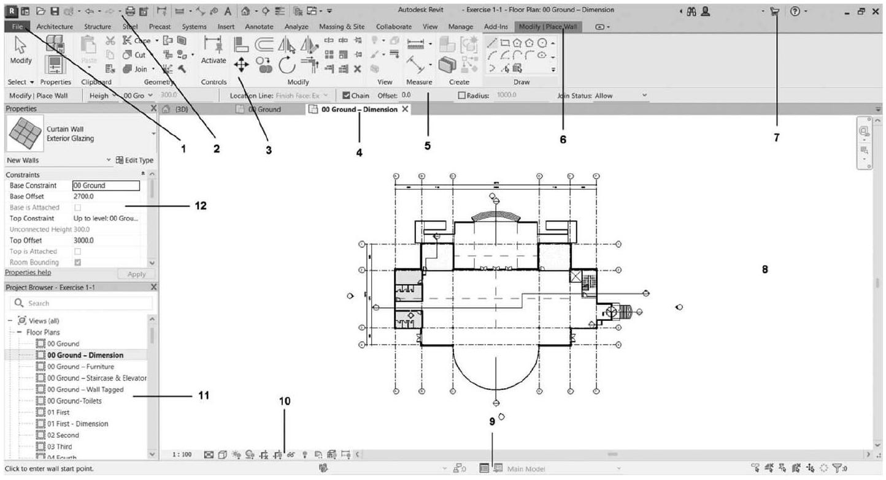
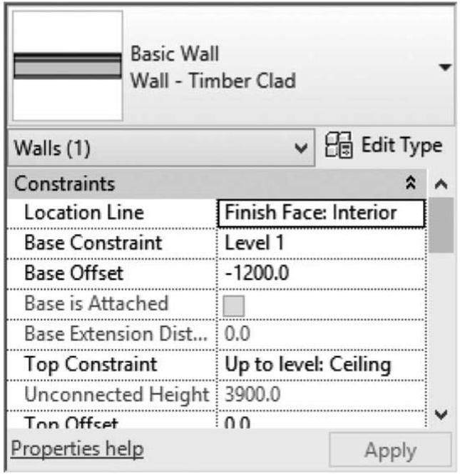
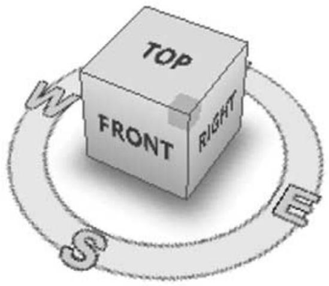
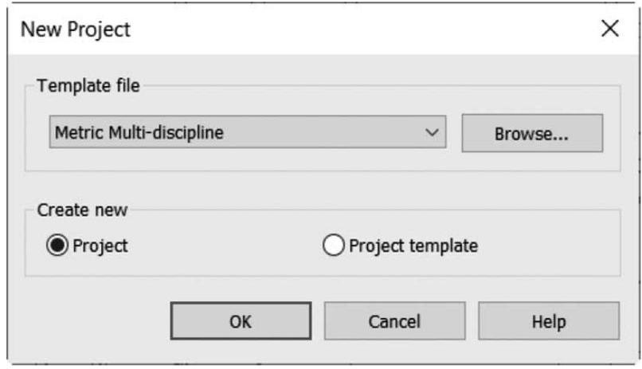

Sesión 8 · Revit: el entorno y la interfaz
La herramienta, por fin. Qué es Revit, cómo se ve por dentro, cómo se navega y cómo se maneja la información: la teoría que mañana pondrás en práctica frente a la máquina.
Objetivos de esta sesión
Al terminar podrás:
- Identificar las partes de la interfaz de Revit y para qué sirve cada una.
- Explicar por qué el edificio se construye con elementos y no con líneas.
- Distinguir un tipo de una instancia, y saber cuál estás modificando.
- Distinguir los tipos de archivo (.rvt, .rte, .rfa, .rft) y cuándo se usa cada uno.
- Explicar qué es un nivel y por qué se define antes de dibujar el primer muro.
- Anticipar qué vistas cambian cuando modificas un elemento.
Llevas seis sesiones construyendo el proyecto y su representación; hoy conoces la herramienta que lo volverá modelo. Esta sesión es un recorrido guiado por Revit: su lógica, su pantalla y sus archivos. En la próxima (S9) lo abrirás tú.
1 · Qué es Autodesk Revit
Revit es la plataforma que este curso ha elegido para aplicar la metodología BIM que vimos en la S2. Conviene decirlo con precisión: Revit y BIM no son sinónimos. Puedes usar Revit de forma pobre, como si fuera un tablero de dibujo, y puedes aplicar principios BIM con otras plataformas. Dos ideas definen su lógica.
La primera es el archivo único: en un proyecto académico como el tuyo, todo el modelo
vive en un solo archivo .rvt, y de él se derivan plantas, secciones, alzados y tablas
coordinadas entre sí. La segunda: Revit se basa en vistas: siempre trabajas
dentro de una vista (una planta, una sección, un 3D), y la primera pregunta antes de modelar
es siempre: ¿estoy en la vista correcta? (Hamad, 2025).
Dos matices que evitan malentendidos
«Archivo único» es cierto aquí, pero no siempre. En la práctica profesional un proyecto se reparte en modelos vinculados, trabajo compartido entre varias personas y bibliotecas externas. Para tu museo de un semestre, un archivo basta; no lo generalices.
«Automáticamente» es engañoso. El modelo permite derivar las vistas y mantenerlas coordinadas, que no es poco. Pero tú sigues teniendo que crear cada vista, definir su alcance, configurar qué se ve, anotar y componer los planos. Revit coordina; no documenta solo.
Architecture, Structure y MEP
Revit reúne tres disciplinas en un mismo paquete: Architecture (arquitectos), Structure (ingenieros estructurales) y MEP (instalaciones). En este curso usaremos las herramientas de arquitectura (Hamad, 2025).
2 · La interfaz
Al crear o abrir un proyecto aparece el área de trabajo. Tus dos vías principales a los comandos son la cinta de opciones y el menú de archivo (Hamad, 2025).

Las piezas que usarás todo el tiempo:
- Cinta (ribbon): pestañas y paneles con los comandos; al seleccionar un elemento aparece una pestaña contextual con sus herramientas.
- Propiedades: los parámetros del elemento seleccionado (o de la vista actual, si no hay selección), con el selector de tipo arriba.
- Navegador del proyecto: la tabla de contenido del proyecto, con todas sus vistas, tablas, planos y familias (Autodesk, 2025).
- Barra de control de vista: escala, nivel de detalle (Coarse/Medium/Fine) y estilo visual (de alambre a sombreado).

3 · Los niveles: el esqueleto invisible del modelo
Nivel (Level)
Un nivel es un plano horizontal de referencia a una altura determinada: el piso terminado de planta baja, el del primer piso, la cara inferior de la cubierta. No es un objeto que se vea en el edificio terminado; es la cota de la que todo cuelga.
Importa por tres razones, y conviene entenderlas antes de dibujar el primer muro:
- Cada vista de planta pertenece a un nivel. Cuando abres «Level 1» estás mirando el corte horizontal asociado a ese plano de referencia. Por eso la primera pregunta sigue siendo ¿en qué vista estoy?: si dibujas en el nivel equivocado, el muro existe, pero no donde creías.
- La mayoría de los elementos arquitectónicos se relacionan con niveles. Un muro
arranca siempre de un nivel base, y desde ahí tienes dos opciones: restringirlo a
un nivel superior, o darle una altura no conectada (un número). Las dos
son parámetros y las dos son válidas; verás ambas en Propiedades. La diferencia está en el tipo de
relación: la restricción crea una dependencia con otro nivel, mientras que la altura no
conectada guarda un valor independiente.
En la práctica: si el muro está restringido al Level 2 y subes ese nivel, el muro crece solo. Si le diste altura no conectada, conserva su altura, aunque seguirá anclado a su nivel base: si mueves ese, el muro se desplaza entero. Siempre que el proyecto lo permita, restringe a niveles: es lo que hace que el modelo reaccione en vez de obligarte a reeditar. - Si mueves el nivel, se mueve lo que depende de él. Subir la altura de entrepiso de 3.00 a 3.20 m no obliga a reeditar muro por muro: cambias el nivel y el modelo reacciona. Eso es el comportamiento paramétrico del que hablamos en la S2.
La conexión con tu anteproyecto
Los niveles son la traducción digital de algo que ya dibujaste a mano: las líneas de nivel que acotaste en tu sección (S6 y S7). Cuando en el Parcial 2 empieces a modelar el museo, lo primero que harás no será un muro, sino definir los niveles a partir de tu propia sección. Tenerla bien resuelta te ahorrará rehacer el modelo.
4 · Tipo e instancia: la distinción que evita desastres
Si solo te llevas dos ideas de esta sesión, que sean los niveles y ésta. En Revit, cada elemento que colocas es una instancia de un tipo.
Tipo e instancia
El tipo es la definición: «Muro básico genérico de 20 cm», con su composición, sus capas y su material. La instancia es cada muro concreto que dibujaste con ese tipo, con su posición, su longitud y su altura.
En Propiedades verás ambas cosas: los parámetros de instancia abajo (afectan solo al muro seleccionado) y, con el botón Editar tipo, los parámetros de tipo (afectan a todos los muros de ese tipo en el proyecto).
El error clásico del primer semestre
Quieres que un muro sea más grueso, entras a Editar tipo, cambias el espesor… y se engordan los treinta muros del museo. No es un fallo del programa: hiciste exactamente lo que pediste.
La regla: si quieres cambiar uno, cambia una propiedad de instancia o asígnale otro tipo. Si quieres cambiar todos los de esa clase, edita el tipo. Y si quieres una variante nueva sin tocar las existentes, duplica el tipo antes de editarlo.
Esta lógica también explica las familias. Una puerta vive en un archivo .rfa (la
familia), que contiene varios tipos (0.90 × 2.10, 1.00 × 2.10…), y cada puerta que
colocas en un muro es una instancia de uno de esos tipos, alojada en su anfitrión.
Familia → tipo → instancia → anfitrión: esa cadena es la estructura de datos de casi todo lo que
modelarás.
5 · Navegar el modelo
La rueda del ratón es el zoom (girar acerca/aleja, presionarla y arrastrar desplaza, doble clic ajusta a pantalla). En 3D, el ViewCube orienta el modelo con un clic, y con Shift + rueda presionada se orbita. Para vistas en perspectiva se coloca una cámara, exactamente lo que en el Parcial 3 usaremos para los renders.

6 · Proyectos, plantillas y archivos
Un proyecto nuevo siempre se crea a partir de una plantilla. Al abrir un archivo, fíjate en su versión: un archivo guardado en una versión más nueva no abre en una más antigua, y al actualizar uno viejo ya no puede regresar (Hamad, 2025).
| Extensión | Qué contiene |
|---|---|
| .rvt | Proyecto: el modelo del edificio con todas sus vistas. |
| .rte | Plantilla de proyecto: unidades, vistas y configuración de partida. |
| .rfa | Familia: un componente cargable (puerta, ventana, mueble). |
| .rft | Plantilla de familia: base para crear una familia nueva. |

7 · Las bases de dibujar, seleccionar y modificar
Mañana dibujarás tus primeros muros. Tres ayudas te darán precisión (Hamad, 2025): las cotas temporales (teclea la medida en vez de "atinarle" con el ratón), las líneas de alineación (guías punteadas que alinean tu trazo con lo existente) y los snaps (el cursor se engancha a extremos, centros e intersecciones). Para seleccionar: clic directo, ventana (arrastre a la derecha: solo lo contenido) o cruce (a la izquierda: también lo atravesado). Y para modificar, el panel Modify concentra los comandos esenciales:
| Comando | Qué hace |
|---|---|
| Move (Mover) | Desplaza los elementos una distancia exacta. |
| Copy (Copiar) | Duplica; con Multiple, varias copias seguidas. |
| Rotate (Rotar) | Gira alrededor de un centro de rotación. |
| Mirror (Simetría) | Refleja respecto de un eje (existente o dibujado). |
| Array (Matriz) | Repite en patrón lineal o radial. |
Ya sabes más Revit del que crees
Todo lo que viste en este parcial es Revit por anticipado: la planta que domina la pantalla es el corte a 1.20 m que aprendiste en la S6; el Navegador lista las vistas porque "BIM es un modelo, muchas vistas" (S2); y los muros que dibujarás mañana son los de tu anteproyecto (S7). El programa solo le pone botones a lo que ya entiendes.
Para la próxima sesión (taller en laboratorio)
La S9 es frente a la máquina: verifica tu acceso al laboratorio o trae laptop con Revit instalado (hay licencia educativa gratuita en el sitio de Autodesk con tu correo institucional).
Trae también tu anteproyecto (S7) con las cotas legibles. La mayor parte del taller será práctica guiada sobre un recinto genérico, pero en el último bloque tomarás las medidas de tu propia planta para trazar un fragmento de tu museo: un espacio, sus muros exteriores, una división y una puerta.
Comprobación de logro
Sin computadora y en tres líneas cada una, responde: ¿qué es un nivel y por qué importa antes de dibujar?, ¿por qué un muro no es una línea? y ¿qué diferencia hay entre un .rvt y un .rte?
Estas tres preguntas son del mismo tipo que las del examen de la S10: se te pedirá criterio, nunca en qué pestaña vive un botón.
Referencias
- Hamad, M. (2025). Autodesk Revit 2025 Architecture. Mercury Learning and Information (sello de De Gruyter). Capítulos 1 y 2.
- Autodesk. (2025). Ayuda de Revit 2025. Recuperado de help.autodesk.com/view/RVT/2025.
Qué sigue: Sesión 9, taller: primer contacto con Revit. Abrir, navegar y dibujar tus primeros muros.